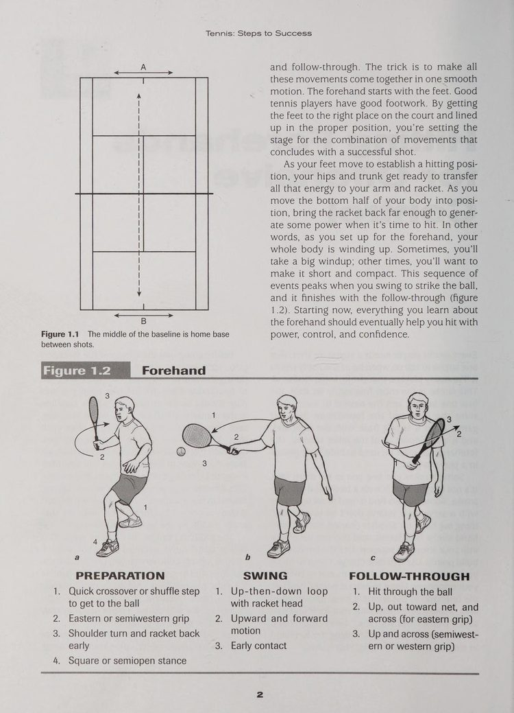
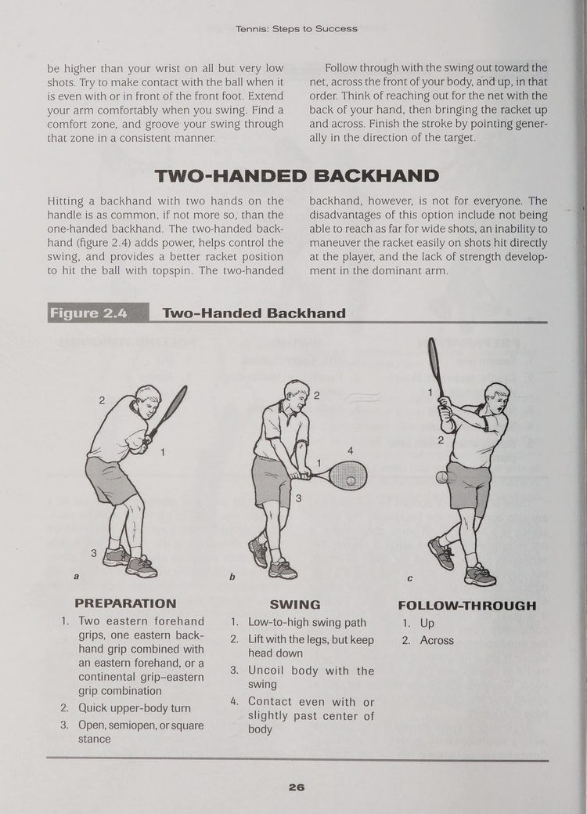
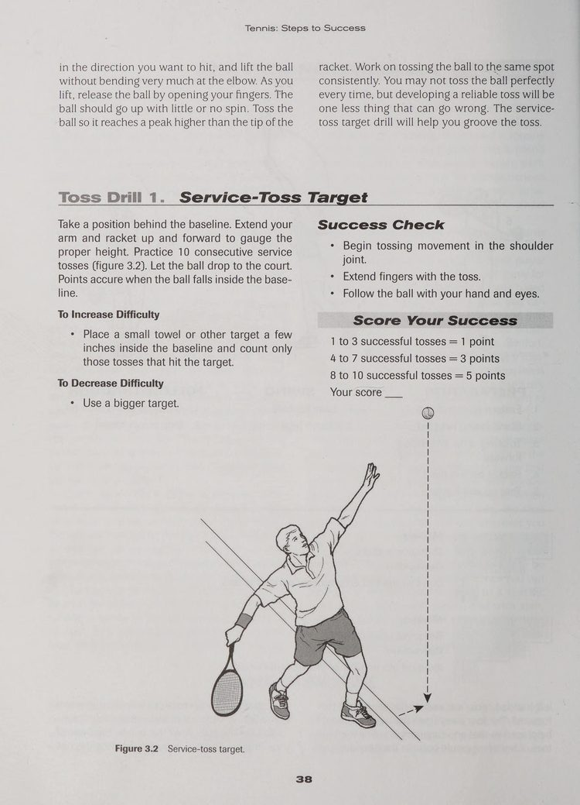
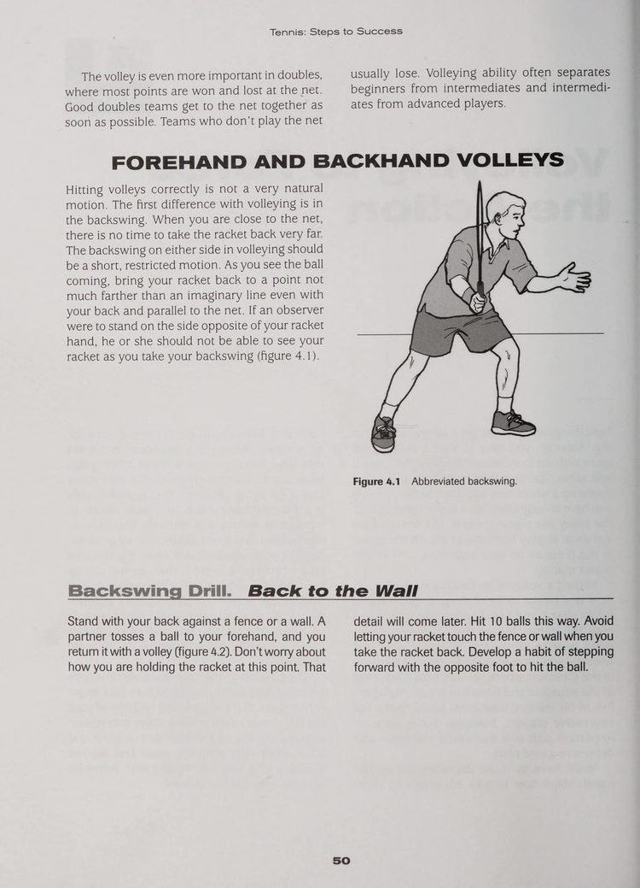
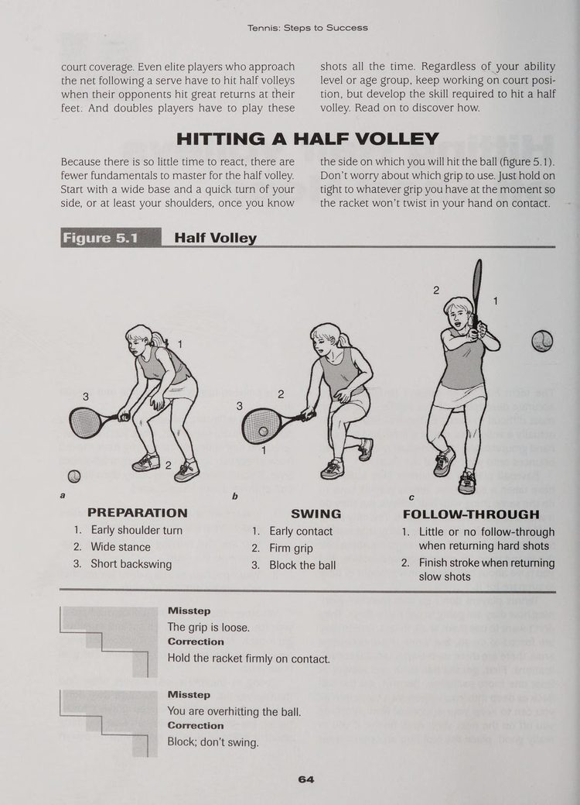
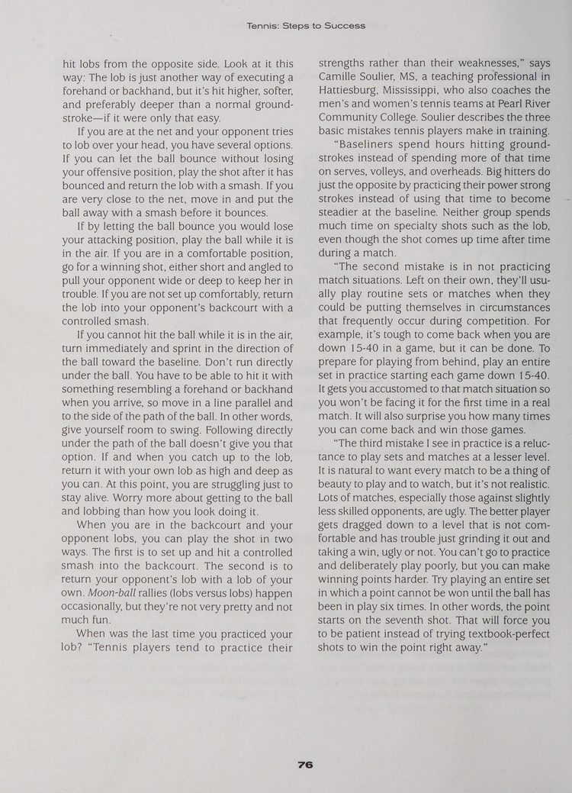
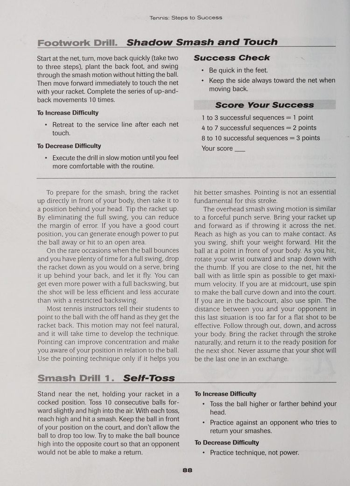
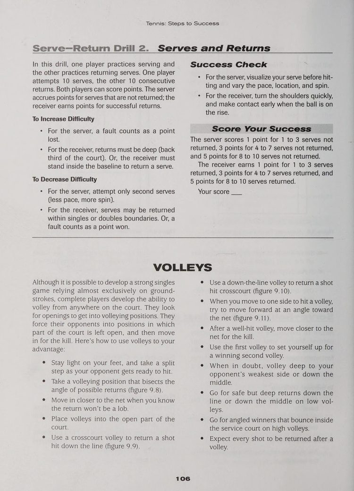
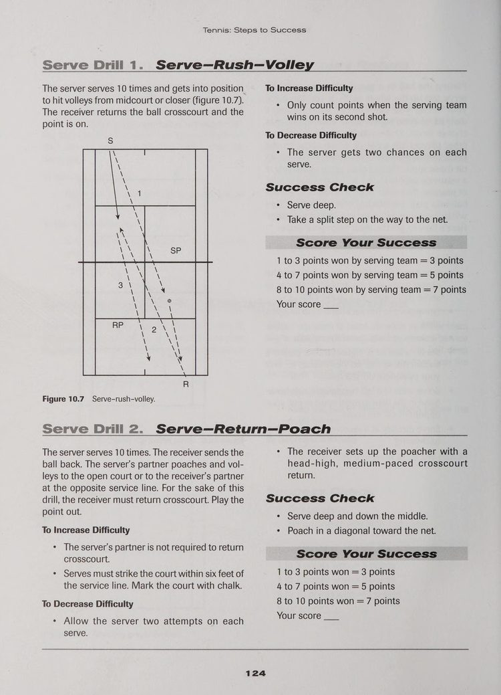

Phần I: Những Nấc Thang Thành Công & Cú Đánh Cuối Sân
Triết lý đào tạo từng bước của Human Kinetics, cú thuận tay kiểm soát tấn công và biến cú trái tay thành sở trường
1. Triết Lý Đào Tạo: Từng Bước Tiến Tới Thành Công Trong Quần Vợt
Bộ giáo trình "Các Bước Tiến Tới Thành Công" (Steps to Success) của Nhà xuất bản Human Kinetics được xây dựng dựa trên nguyên lý sư phạm thể thao hiện đại: kỹ năng vận động phức tạp của quần vợt được phân tách thành từng nấc thang phát triển rõ ràng, giúp người học tiến bộ vững chắc mà không bị quá tải thông tin.
Trong mỗi bước đi, bạn sẽ được trang bị ba yếu tố then chốt: tại sao kỹ năng này lại quan trọng trên sân đấu, cách thức thực hiện chuẩn xác về mặt cơ học chuyển động, và hệ thống bài tập tự đánh giá kèm tiêu chí tính điểm định lượng.
Dù bạn là một người mới bắt đầu bước vào môn thể thao này hay là một tay vợt phong trào lâu năm muốn tái cấu trúc toàn diện lối chơi của mình, việc tuân thủ lộ trình mười một nấc thang này sẽ giúp bạn xây dựng nền móng kỹ thuật vững như bàn thạch, hạn chế tối đa nguy cơ chấn thương và tự tin làm chủ mọi tình huống đối đầu trên sân đấu.
2. Bước 1: Cú Đánh Thuận Tay Kiểm Soát Tấn Công (Hitting Forehands for Offensive Control)
Cú đánh thuận tay (forehand) là vũ khí chủ lực và tự nhiên nhất của hầu hết các tay vợt. Một cú thuận tay xuất sắc không bắt đầu từ cánh tay mà bắt đầu từ đôi chân. Bộ chân linh hoạt giúp bạn di chuyển đón đầu quả bóng và thiết lập tư thế cân bằng trước khi vung vợt.
Chuỗi chuyển động của cú thuận tay chuẩn mực bao gồm ba giai đoạn khép kín:
Giai đoạn chuẩn bị (Preparation): Ngay khi nhận diện hướng bóng của đối phương, bạn thực hiện bước trượt hoặc Bước chân bắt chéo (crossover step) (crossover step) để tiếp cận bóng. Đồng thời, tay không thuận hỗ trợ xoay vai và hông sang một bên, đưa đầu vợt lên cao và vẽ một đường vòng cung (loop) ra phía sau. Cách cầm vợt Eastern hoặc Semi-Western là sự lựa chọn tối ưu để tạo lực và kiểm soát xoáy.
Giai đoạn vung vợt (Swing): Khi bóng nảy lên, đầu vợt hạ thấp xuống dưới tầm bóng rồi vung vút lên trên và hướng về phía trước. Điểm tiếp xúc bóng lý tưởng luôn nằm ở phía trước hông dẫn đường. Cẳng tay và cổ tay thả lỏng để tạo ra hiệu ứng roi quất, truyền toàn bộ năng lượng từ chuyển động xoay thân vào quả bóng.
Giai đoạn kết thúc (Follow-Through): Sau khi va chạm, cây vợt tiếp tục hành trình vươn dài về phía lưới trước khi quét chéo qua vai đối diện. Thân người giữ thăng bằng tuyệt đối và mắt vẫn nhìn vào điểm bóng vừa rời mặt vợt.

Hình 1: Ba giai đoạn của cú thuận tay tấn công — chuẩn bị xoay vai đưa vợt ra sau, vung vợt hình vòng cung đón bóng phía trước và kết thúc trọn vẹn qua vai.
3. Bước 2: Biến Cú Trái Tay Thành Vũ Khí Sở Trường (Turning the Backhand Into a Strength)
Rất nhiều người chơi xem cú trái tay (backhand) như một điểm yếu cần che giấu và thường tìm cách né trái để đánh phải. Đây là một sai lầm chiến thuật nghiêm trọng khiến bạn dễ dàng bị các đối thủ giàu kinh nghiệm khai thác triệt để.
Cú trái tay hoàn toàn có thể trở thành vũ khí ghi điểm lợi hại nếu bạn nắm vững nguyên lý cơ học của nó:
Đối với cú trái tay một tay (One-Handed Backhand): Bạn cần sử dụng kiểu cầm vợt Eastern Backhand. Chìa khóa thành công là xoay vai sâu hơn chín mươi độ sao cho lưng hơi quay về phía đối thủ. Cổ tay phải được khóa chặt tuyệt đối ở góc vuông với cẳng tay tại thời Điểm tiếp xúc bóng. Cánh tay duỗi thẳng hướng về mục tiêu và cánh tay không thuận mở rộng ra sau để giữ thăng bằng cho lồng ngực.
Đối với cú trái tay hai tay (Two-Handed Backhand): Tay thuận cầm vợt ở phía dưới theo kiểu Continental, trong khi tay không thuận cầm phía trên theo kiểu Eastern Forehand. Về bản chất, cú trái hai tay chính là một cú thuận tay bằng tay không thuận. Hai cánh tay phối hợp nhịp nhàng giúp kiểm soát bóng bổng tuyệt vời và tăng cường sự ổn định khi xử lý các pha bóng nhanh tốc độ cao.

Hình 2: Phân tích kỹ thuật cú trái tay — cơ chế xoay vai đón bóng, vị trí tiếp xúc ổn định và đà vung vợt dứt khoát đưa bóng sâu về cuối sân.
Phần II: Cú Giao Bóng Uy Lực & Nghệ Thuật Tác Chiến Trên Lưới
Giao bóng thiết lập điểm số, cú bắt vô-lê dứt điểm và kỹ thuật bắt nửa vô-lê cứu nguy tại vùng đất chết
4. Bước 3: Giao Bóng Thiết Lập Thế Trận Áp Đảo (Serving to Set Up Points)
Cú giao bóng (serve) là hành động duy nhất trong trận đấu mà bạn nắm quyền kiểm soát một trăm phần trăm: quả bóng nằm trong tay bạn, bạn tự quyết định thời điểm phát bóng và hoàn toàn không bị ảnh hưởng bởi đường bóng của đối phương. Một cú giao bóng tốt không nhất thiết phải là một cú ăn điểm trực tiếp (ace), mà là cú đánh đẩy đối thủ vào thế bị động để mở toang cơ hội dứt điểm cho bạn.
Để làm chủ cú giao bóng, hãy tuân thủ chuỗi hành động kỹ thuật chuẩn mực:
Kiểu cầm vợt Continental là bắt buộc. Cầm kiểu số một giúp cổ tay tự do phát lực xoay sấp (pronation) để tạo tốc độ đầu vợt tối đa và các loại xoáy biến hóa.
Động tác tung bóng (Toss) phải được thực hiện bằng cách nâng thẳng toàn bộ cánh tay từ khớp vai, nhẹ nhàng thả bóng tại đỉnh tầm với giống như bạn đang đặt quả bóng lên một chiếc kệ cao. Quả bóng phải được tung hơi chếch về phía trước trong sân.
Tư thế chiếc cúp (Trophy Pose) là khoảnh khắc vàng: khuỷu tay gập vuông góc ngang vai, đầu vợt hướng lên trời và thân người hơi cong hình cánh cung. Sau đó, đầu vợt rơi tự do xuống phía sau lưng trong động tác gãi lưng sâu trước khi được phóng thẳng lên không trung đón bóng tại điểm cao nhất.
Bạn cần thuần thục cả ba biến thể giao bóng: giao bóng phẳng (Flat) để ghi điểm trực tiếp, giao bóng xoáy lát (Slice) để kéo đối thủ dạt ra ngoài mép sân, và giao bóng xoáy cày (Kick) để bóng nảy cao vọt qua tầm với vai trái của đối thủ.

Hình 3: Chuỗi động tác giao bóng hoàn chỉnh — nhịp tung bóng ổn định, tư thế chiếc cúp nạp năng lượng, hạ vợt gãi lưng và bật nhảy tiếp xúc bóng tại đỉnh cao nhất.
5. Bước 4: Bắt Vô-Lê Trên Lưới Ép Đối Thủ Vào Thế Bí (Volleying to Force the Action)
Tiến lên lưới là phương thức nhanh nhất và trực tiếp nhất để kết thúc điểm số trong quần vợt. Khi bạn áp sát lưới, thời gian phản ứng của đối phương bị rút ngắn tới hơn một nửa, buộc họ phải đưa ra những quyết định vội vã dưới áp lực ngột ngạt.
Kỹ thuật bắt vô-lê (volley) đòi hỏi sự tối giản tuyệt đối trong động tác:
Nguyên tắc quan trọng nhất là tuyệt đối không mở vợt ra sau. Bất kỳ động tác vung vợt ra sau nào cũng sẽ khiến bạn muộn nhịp và đánh hỏng bóng. Khi nhận diện đường bóng, bạn chỉ cần xoay nhẹ vai để định hình góc mặt vợt và giữ đầu vợt luôn cao hơn cổ tay.
Động tác tiếp xúc bóng là một cú dập bóng dứt khoát (punching motion) về phía trước. Cổ tay phải được khóa chặt như một khối kim loại vững chắc để hấp thụ và phản hồi toàn bộ xung lực từ quả bóng của đối phương. Hãy luôn bước chân chéo về phía trước để dồn trọng lượng thân người vào cú dứt điểm.

Hình 4: Kỹ thuật vô-lê chuẩn mực — giữ đầu vợt cao hơn cổ tay, không mở vợt ra sau và bước chân dồn trọng lượng cơ thể dập bóng dứt khoát.
6. Bước 5: Bắt Nửa Vô-Lê Cứu Nguy Tại Vùng Đất Chết (Hitting Half Volleys off Short Hops)
Khu vực nằm giữa vạch giao bóng và vạch cuối sân thường được gọi là "vùng đất chết" (no man's land) — nơi quả bóng của đối phương rơi ngay dưới chân bạn, quá thấp để bắt vô-lê trên không nhưng lại quá nhanh để có thể lùi lại đánh cú chạm đất thông thường.
Cú bắt nửa vô-lê (half volley) là kỹ năng cứu nguy bậc thầy giúp bạn giải tỏa hiểm nguy trong khu vực này:
Bạn phải đón quả bóng ngay khoảnh khắc nó vừa nhú lên khỏi mặt đất chỉ vài centimet (short hop). Động tác đòi hỏi bạn phải chùng sâu hai đầu gối, hạ thấp trọng tâm cơ thể và đặt mắt nhìn gần sát mặt sân.
Mặt vợt được giữ hơi khép nhẹ hoặc vuông góc với đường bay của bóng. Tuyệt đối không được vung vợt mạnh; hãy sử dụng một chuyển động dẫn vợt cực kỳ êm ái và ngắn gọn để nâng nhẹ quả bóng bay qua lưới an toàn, tạo điều kiện cho bạn tiếp tục di chuyển tiến lên chiếm lĩnh vị trí trên lưới.

Hình 5: Cú nửa vô-lê cứu nguy — hạ thấp trọng tâm bằng cách gập sâu hai đầu gối, giữ mặt vợt ổn định và đón bóng ngay khi vừa chạm đất nảy lên.
Phần III: Cú Lốp Bóng, Đập Bóng Overhead & Cú Bỏ Nhỏ
Vũ khí kiểm soát không gian trên không, đòn dứt điểm búa bổ và sự tinh tế của cú bỏ nhỏ bất ngờ
7. Bước 6: Cú Lốp Bóng Khống Chế Đối Phương (Lobbing to Control Your Opponent)
Cú lốp bóng (lob) là một trong những vũ khí chiến thuật bị đánh giá thấp nhất nhưng lại có khả năng xoay chuyển cục diện trận đấu ngoạn mục nhất. Khi đối thủ lao lên áp sát lưới hòng dứt điểm, một cú lốp bóng chuẩn xác sẽ ngay lập tức biến họ từ kẻ tấn công hung hãn thành người phòng ngự hoảng loạn quay lưng chạy về cứu bóng.
Bạn cần làm chủ hai phương thức lốp bóng căn bản:
Cú lốp bóng phòng thủ (Defensive Lob): Thường được sử dụng khi bạn bị ép dạt ra xa ngoài sân và mất thăng bằng. Bằng cách mở ngửa mặt vợt và nâng cánh tay từ dưới lên trên thật cao, bạn đưa quả bóng vút lên tầng không trung cao vút. Độ cao lớn giúp kéo dài thời gian quả bóng bay, mang lại cho bạn từ hai đến ba giây quý giá để chạy về trung tâm sân và tái lập tư thế phòng ngự vững vàng. Quả bóng phải rơi sâu gần vạch đáy sân đối phương để ngăn chặn cú đập smash dứt điểm của họ.
Cú lốp bóng tấn công (Offensive Topspin Lob): Được thực hiện với động tác chuẩn bị giống hệt một cú thuận tay hoặc trái tay thông thường. Ngay trước khi tiếp xúc bóng, bạn hạ đầu vợt thật sâu rồi quét vút lên trên với tốc độ cực nhanh, tạo ra độ xoáy cuộn topspin dữ dội. Quả bóng bay vọt qua đầu đối thủ chỉ vừa đủ tầm với rồi lập tức chúi nhanh xuống phần sân trống phía sau và nảy vọt ra xa.

Hình 6: Quỹ đạo và kỹ thuật thực hiện cú lốp bóng — mở mặt vợt nâng cao bóng phòng ngự câu giờ hoặc quét xoáy topspin tấn công vượt qua tầm với đối thủ trên lưới.
8. Bước 7: Cú Đập Smash Trên Đầu Đầy Uy Lực (Smashing the Overhead Shot With Authority)
Một cú đập bóng trên đầu (overhead smash) uy lực là câu trả lời đanh thép nhất để trừng phạt những quả lốp bóng thiếu chiều sâu của đối phương. Đây là cú đánh thể hiện sự thống trị tuyệt đối của tay vợt trên lưới.
Về bản chất, động tác smash tương tự như một cú giao bóng trên không. Quy trình thực hiện bao gồm các mắt xích cốt lõi:
Thứ nhất, phản xạ xoay thân tức thì. Ngay khi nhận diện quả bóng bổng của đối phương, bạn không được lùi thẳng lưng mà phải lập tức xoay nghiêng người sang một bên theo tư thế chuẩn bị giao bóng. Đưa cây vợt lên vị trí sau gáy ngay từ bước chân đầu tiên.
Thứ hai, định vị bằng cánh tay không thuận. Giơ thẳng cánh tay không thuận lên cao chỉ thẳng vào quả bóng đang rơi. Hành động này giúp bạn khóa chặt tầm nhìn, duy trì thăng bằng cho lồng ngực và ngăn chặn tật nhấc đầu sớm.
Thứ ba, bộ chân di chuyển đón bóng. Sử dụng các bước trượt ngang hoặc bước đan chéo chân để lùi về phía sau quả bóng. Quả bóng phải luôn nằm ở phía trước trán của bạn.
Thứ tư, bật nhảy tiếp xúc và kết thúc dứt khoát. Vươn cánh tay cầm vợt lên cao hết cỡ, tiếp xúc bóng tại điểm cao nhất có thể với động tác Động tác sấp cổ tay / xoay trong cẳng tay sấp mạnh mẽ, hướng quả bóng đập chéo sân hoặc dọc biên vào khoảng sân trống không thể cứu vãn.

Hình 7: Chuỗi động tác đập bóng trên đầu chuẩn mực — xoay nghiêng thân người, dùng tay chỉ định vị bóng trên không, lùi bước đón điểm rơi và vươn cao dập bóng uy lực.
9. Bước 8: Tung Cú Bỏ Nhỏ Tinh Tế Kết Liễu Điểm Số (Executing Drop Shots Effectively)
Cú bỏ nhỏ (drop shot) là một tác phẩm nghệ thuật tinh tế đòi hỏi cảm giác bóng bậc thầy và sự thấu cảm chiến thuật nhạy bén. Mục tiêu của cú bỏ nhỏ là khiến quả bóng rơi nhẹ nhàng vừa đủ qua mép lưới và nảy ngắn nhiều lần, trừng phạt những đối thủ có thói quen lùi sâu sau vạch đáy sân.
Yếu tố sống còn quyết định thành bại của cú bỏ nhỏ là sự ngụy trang (disguise). Bạn phải chuẩn bị tư thế đứng và đà đưa vợt ra sau giống hệt như chuẩn bị tung ra một cú đánh bóng sâu uy lực. Chỉ đến phần nghìn giây cuối cùng trước khi chạm bóng, bạn mới thay đổi tốc độ: nới lỏng lực cầm vợt, mở ngửa nhẹ mặt vợt và thực hiện một động tác vuốt hãm lực thật êm ái (soft hands) dưới đáy quả bóng.
Độ xoáy ngược nhẹ sẽ giúp quả bóng ngừng nảy về phía trước và nảy là là mặt đất. Hãy nhớ rằng: không bao giờ tung cú bỏ nhỏ khi bạn đang bị ép lùi ra sau vạch cuối sân; thời điểm lý tưởng nhất là khi bạn nhận bóng ngắn trong sân và đối thủ đang chật vật lùi xa phía sau.
Phần IV: Chiến Thuật Thi Đấu Đơn, Đánh Đôi & Bản Lĩnh Tinh Thần
Xây dựng điểm số trận đơn, phối hợp đội hình đánh đôi, nghi thức 16 giây và bản lĩnh tâm lý vững vàng
10. Bước 9: Chiến Thuật Thi Đấu Đơn Chuyên Nghiệp (Competing As a Singles Player)
Thi đấu đơn là một ván cờ vận động đòi hỏi sự kết hợp hài hòa giữa thể lực dẻo dai, kỹ thuật chuẩn xác và tư duy chiến lược sắc bén. Chiến thắng trong một trận đấu đơn không phụ thuộc vào việc ai đánh ra nhiều cú đánh đẹp hơn, mà phụ thuộc vào việc ai duy trì được tính kỷ luật và mắc ít sai lầm tự đánh hỏng hơn.
Để xây dựng một lối chơi đơn vững chắc, bạn cần nắm vững ba phân vùng chiến thuật trên sân:
Vùng phòng thủ (Defensive Zone): Nằm từ một mét trở ra phía sau vạch đáy sân. Khi bị đẩy vào vùng này, nhiệm vụ duy nhất của bạn là đưa bóng an toàn qua lưới thật sâu về cuối sân đối phương để câu giờ phục hồi vị trí. Tuyệt đối không tung ra các cú đánh dứt điểm mạo hiểm từ vùng này.
Vùng trung tính (Neutral Zone): Nằm quanh vạch đáy sân. Đây là khu vực bạn triển khai các loạt bóng bền chéo sân an toàn, duy trì chiều sâu và kiên nhẫn thăm dò điểm yếu của đối thủ.
Vùng tấn công (Offensive Zone): Nằm từ vạch giao bóng tiến lên lưới. Khi đối phương trả bóng ngắn rơi vào vùng này, đó là tín hiệu đèn xanh để bạn bước chân vào sân, tung cú đánh tiếp cận uy lực vào góc yếu của họ và lập tức tiến lên lưới khép góc dứt điểm.

Hình 8: Sơ đồ phân vùng sân đấu đơn — xác định rõ khu vực phòng thủ, khu vực trung tính giằng co và khu vực tấn công quyết định điểm số.
11. Bước 10: Phối Hợp Tác Chiến Trong Đội Hình Đánh Đôi (Playing As a Doubles Team)
Đánh đôi là môn thể thao của sự ăn ý, tốc độ phản xạ và kiểm soát không gian mạng lưới. Khác với thi đấu đơn nơi đường bóng chéo sân chiếm ưu thế tuyệt đối, trong đánh đôi, mục tiêu tối thượng là chiếm lĩnh vị trí trên lưới trước đối phương và tấn công vào khoảng trống giữa hai người hoặc dưới chân họ.
Các nguyên tắc cốt lõi của một cặp đôi vô địch bao gồm:
Đội hình tiêu chuẩn một lên một xuống: Người giao bóng hoặc trả giao đứng ở vạch cuối sân, trong khi đồng đội đứng áp sát lưới tại ô đối diện. Cặp đôi phải luôn di chuyển đồng bộ như hai đầu của một thanh kim loại: khi bóng di chuyển sang trái, cả hai cùng nghiêng sang trái để bảo vệ hành lang biên; khi bóng đi vào giữa, cả hai khép góc bảo vệ trung lộ.
Đội hình hai người cùng trên lưới: Đây là vũ khí áp đảo nhất trong đánh đôi. Khi cả hai tay vợt cùng chiếm lĩnh lưới, góc đánh của đối thủ bị bóp nghẹt hoàn toàn, buộc họ phải tung ra các quả lốp bóng mạo hiểm hoặc đánh bóng thẳng vào tầm bắt vô-lê của bạn.
Chiến thuật cắt lưới bắt bài (Poaching): Người đứng lưới không được đứng yên như tượng gỗ. Hãy quan sát hướng đánh trả của đối phương, phát tín hiệu bí mật với đồng đội và bất ngờ lao chéo qua lưới để bắt gọn quả bóng trả giao, dứt điểm chớp nhoáng ghi điểm số ngoạn mục.

Hình 9: Sơ đồ phối hợp đánh đôi — định vị đội hình tấn công trên lưới, bảo vệ khoảng trống trung lộ và kỹ thuật cắt lưới (poaching) bắt bài.
12. Bước 11: Chuẩn Bị Thể Lực & Bản Lĩnh Tinh Thần Trước Trận Đấu (Preparing for the Match)
Khâu chuẩn bị trước trận đấu và khả năng quản trị cảm xúc trên sân là ranh giới phân định giữa một tay vợt nghiệp dư và một nhà vô địch thực thụ.
Quy trình chuẩn bị toàn diện bao gồm ba trụ cột:
Trụ cột thể chất: Thực hiện bài khởi động động lực kéo dài mười lăm phút trước khi vào sân để làm ấm các khớp vai, hông và kích hoạt hệ thần kinh vận động. Bổ sung đủ nước và chất điện giải trong suốt các hiệp đấu.
Nghi thức mười sáu giây giữa các điểm số (The 16-Second Ritual): Sau mỗi điểm số — dù thắng hay thua — bạn có khoảng mười sáu đến hai mươi giây trước khi giao bóng tiếp theo. Hãy tận dụng khoảng thời gian này theo quy trình bốn bước: quay lưng lại lưới để ngắt kết nối cảm xúc tiêu cực, lau mồ hôi hoặc chỉnh dây cước, hít thở sâu ba nhịp bằng cơ hoành để hạ nhịp tim, và hình dung trong đầu điểm rơi của quả giao bóng tiếp theo.
Kiểm soát tiếng nói nội tâm: Loại bỏ hoàn toàn những lời chỉ trích bản thân tiêu cực như "tại sao mình lại đánh hỏng quả dễ thế này". Thay vào đó, hãy duy trì các khẩu lệnh hành động tích cực và súc tích như "mở vợt sớm", "nhìn bóng", "thả lỏng cổ tay". Khi tâm trí của bạn tập trung vào hành động, sự lo âu sẽ tự khắc tan biến và nhường chỗ cho phong độ đỉnh cao bùng nổ.